0:00
0:00Opening
Nitto ATP Finals 2026 · Social impact / ESG analysis
A hand drops the ball: the title lands on the first bounce.
I'm a brand designer. I use artificial intelligence to design design systems, videos and communication materials.
OpenEconomics' materials were already consistent: I had built their brochures, presentations, reports and digital products over time. The design system lets the marketing team produce on their own and faster, without losing that consistency.
AI: writes the code for the components and the chart engine, the documentation and the examples, and checks that every page follows the rules. Me: I set the brand rules, choose what goes into the system, review every component and approve the social formats the rules come from.
Bars, columns, lines, donuts, waterfalls, maps, sankeys: eleven types that come out with the same colours, the same typography and the same number format. You recognise an OpenEconomics chart before you read it.

Built with the system's blocks and updated by the client without going through me.
Chip, serif number, data point, monogram at the bottom: the same order in every post, written into the system's social rules.
The title comes in when the player tosses the ball. Then five figures, one at a time, each on a shot.
AI: writes the code that overlays the graphics on the footage frame by frame, isolates the ball from the rest of the image and generates the sound of the shots. Me: I choose the figures and when they come in, design the graphics with the OpenEconomics design system and decide how the footage is treated.
Each figure lands on the exact frame of its shot. The pace builds up to the smash, then a single ball brings the pyramid down and the video closes on the logo.
AI: generates the footage of every scene (players, ball, pyramid), the building score and the code that finds the shots in the audio and locks the figures to them. Me: I write the storyboard and the prompts, choose the order of the figures, design the graphics with the OpenEconomics design system and run the review rounds with the client.
The client comments on each scene right on the page, signs with their name and downloads every comment as a PDF, scene by scene. Feedback arrives in one tidy round and our work moves faster.
0:00Opening
Nitto ATP Finals 2026 · Social impact / ESG analysis
A hand drops the ball: the title lands on the first bounce.
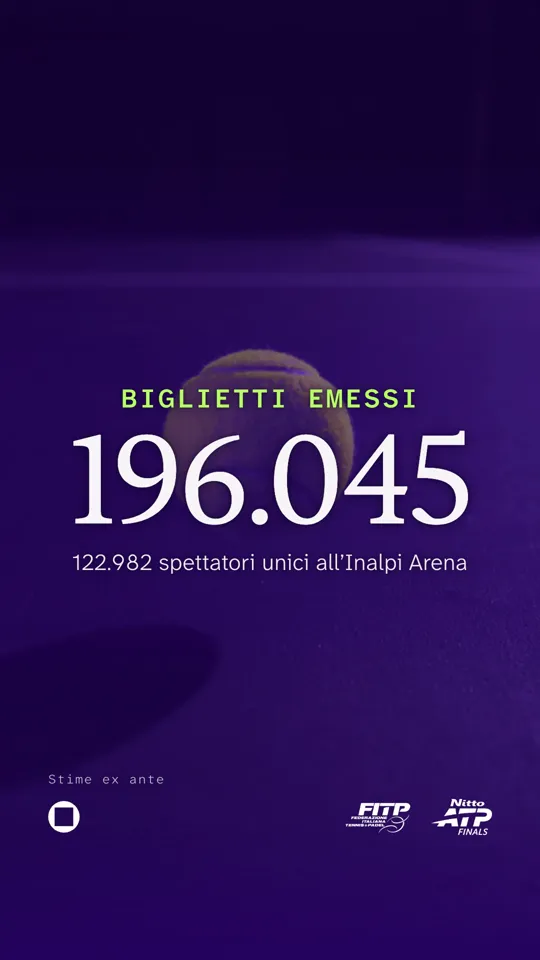
0:02KPI 1 · Bounce
196,045 tickets issued
A bounce shot at floor level.
 0:05
0:05KPI 2 · Serve
2,600 new long-term players
A serve seen from above, a single ball struck.
 0:08
0:08KPI 3 · Net cord
€415.7M in social benefits, +7.7%
The ball clips the top of the net.
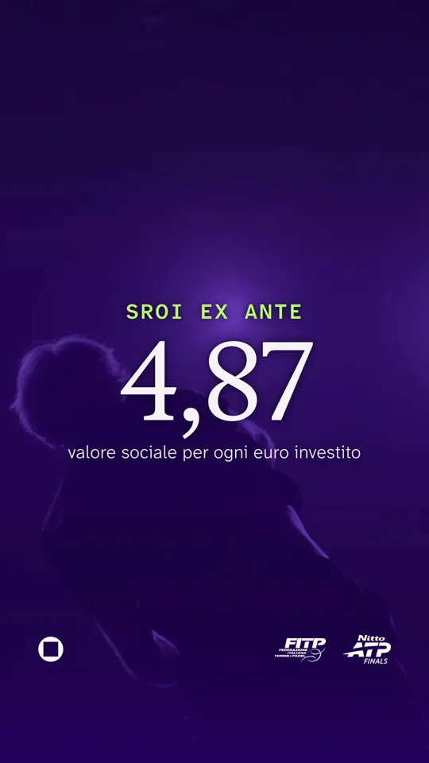
0:12KPI 4 · Smash, the peak
SROI 4.87
A backlit smash: the hardest shot, the music at its peak.
 0:15
0:15KPI 5 · The pyramid
ESG 89.75 | AA+
The camera pulls back to a still pyramid of balls.
 0:18
0:18The collapse
No figure
A ball drops on the top and the pyramid collapses.
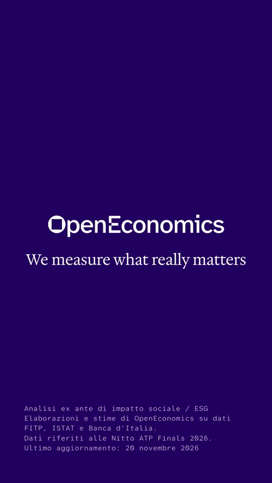
0:22Closing
We measure what really matters
OpenEconomics logo on Bluette, made without AI.
AI: animates the photos of places in the province, generates the two voices and the music, and writes the code that renders each scene and ties every figure to the word that says it. Me: I turn the script into a scene-by-scene storyboard, choose the places, design charts and maps with the OpenEconomics design system and bring in the client's comments.
Thirty-three scenes, each with its own comment box. The client writes, signs and downloads a PDF with the frame, notes and comment for every scene: one document we work on together.
 0:00
0:00Opening
From reporting costs to measuring results
Rieti's town hall, an animated photo.
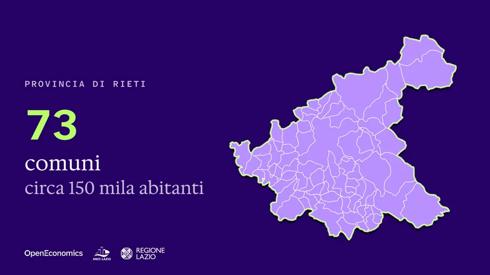
0:18The territory
73 municipalities, about 150,000 residents
The map of the province is drawn municipality by municipality.
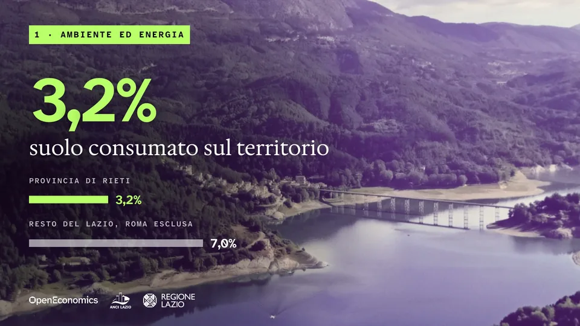
0:44Environment
3.2% of land consumed
Lake Salto: the bars compare Rieti with the rest of Lazio.
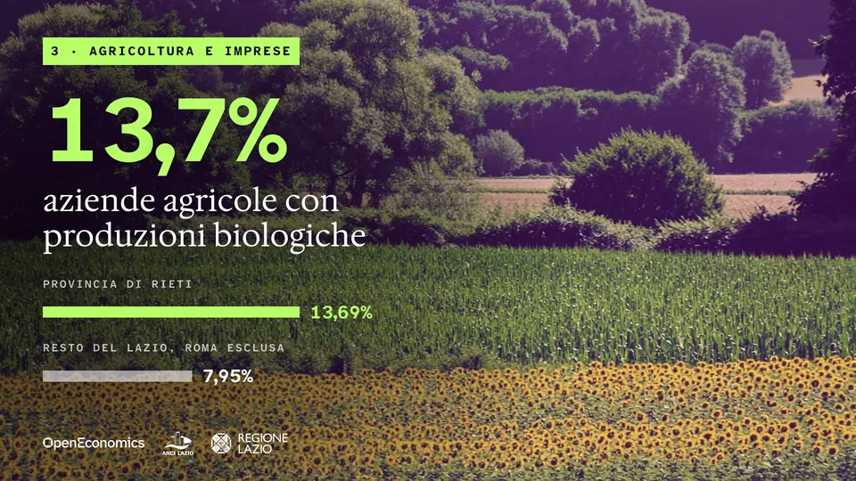
1:30Agriculture
13.7% of farms with organic production
Fields of the Rieti plain, with the values on the bars.
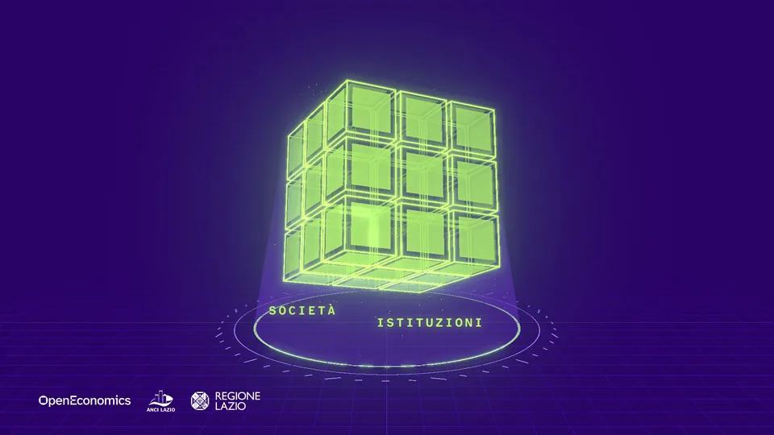
3:16The method
The cube of the six dimensions
A 3D cube turns and shows its faces.
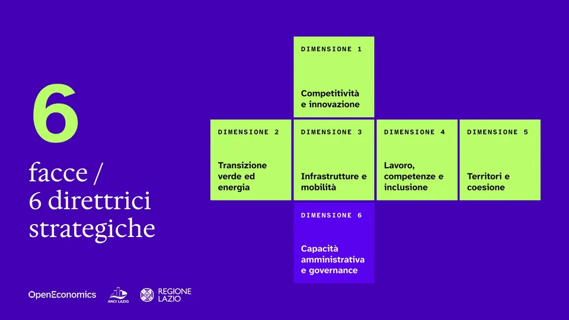
3:37The dimensions
6 faces, 6 strategic directions
The cube unfolds into a cross: each face lights up when the voice names it.
 3:56
3:56The areas
15 areas, scored from 0 to 100
The bars of the fifteen areas against the 50 line.
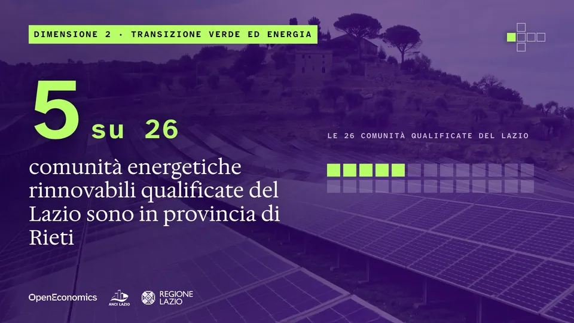
5:19Energy
5 of Lazio's 26 energy communities
A solar farm, with the 26 communities in a grid.
 6:46
6:46Resources
Lakes, sanctuaries and villages to develop
The places on the list light up on the map.
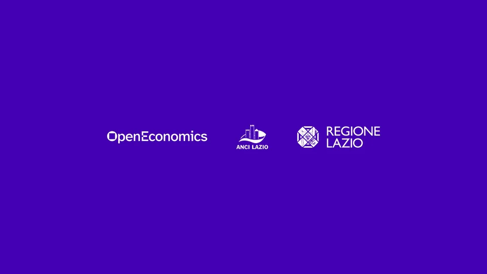
7:46Closing
OpenEconomics · ANCI Lazio · Regione Lazio
The three logos on Bluette, built without AI.
AI: generates the starting images, the clips for each scene, the voiceover and the music, and writes the code that burns the titles into the video. Me: I write the script and the beat-by-beat storyboard and the prompt for each scene, design the typography with the OpenEconomics design system and decide the edit.
 0:00
0:00Beat 01 · Hook
“How much is one euro really worth, once it’s invested in film and TV?”
A 35mm film camera on a table. Slow zoom right into the lens.
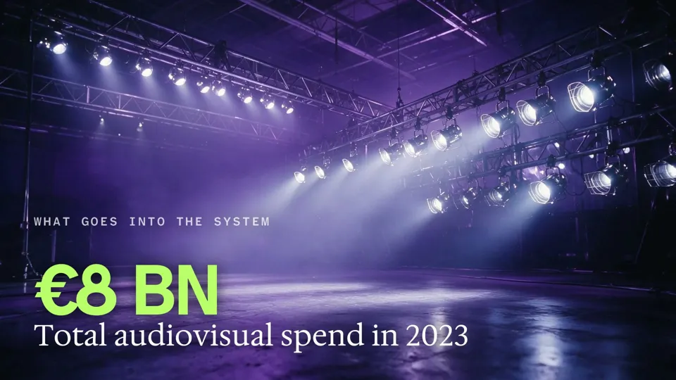
0:07Beat 02 · Input
€8 BN — Total audiovisual spend in 2023
The lights of an empty set switch on one after another.
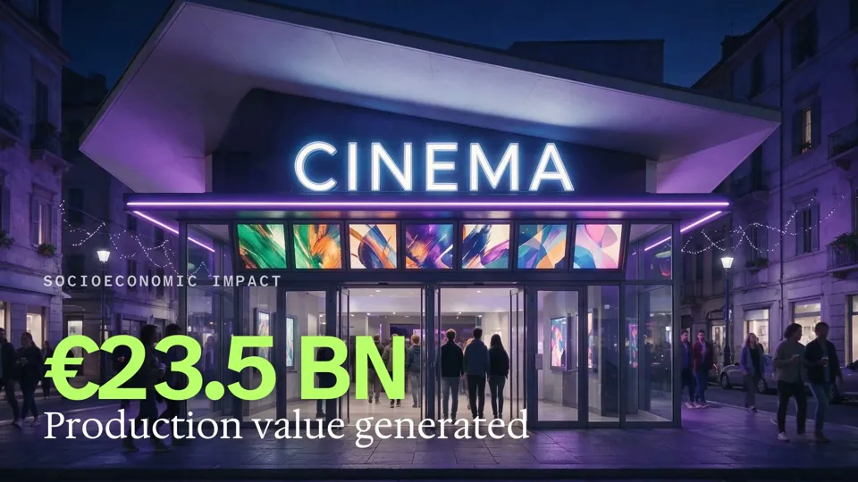
0:15Beat 03 · Production value
€23.5 BN — Production value generated
A cinema entrance at night, with the CINEMA sign.
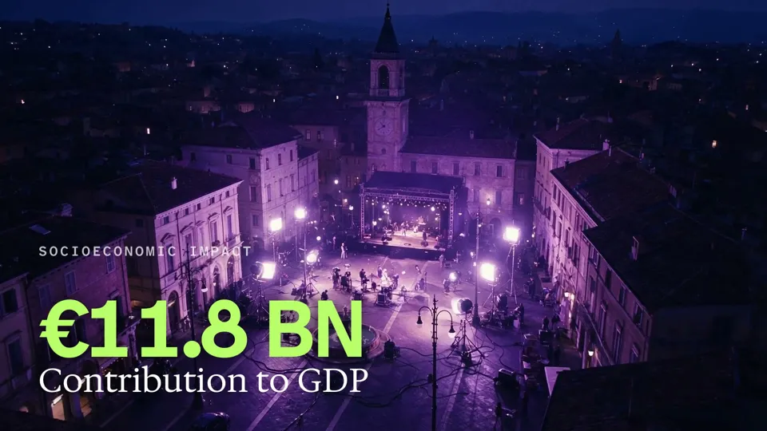
0:22Beat 04 · GDP
€11.8 BN — Contribution to GDP
A historic square from above, with a lit film set.
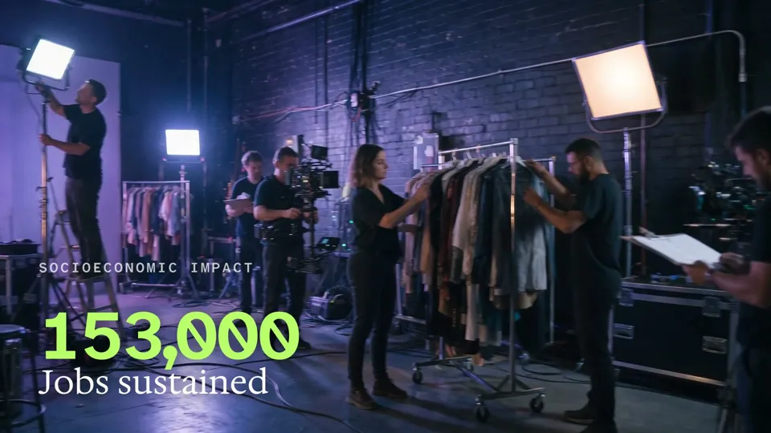
0:29Beat 05 · Employment
153,000 — Jobs sustained
Behind the scenes: make-up, lighting, costumes and camera.
 0:37
0:37Beat 06 · Tax revenue
€3.2 BN — Tax revenue generated
A public building at sunset, shot from a rising crane.
 0:44
0:44Beat 07 · Climax SROI
4.5 — Every €1 invested returns €4.5 in social value
A full theatre seen from the screen. The camera pulls back.
 0:57
0:57Beat 08 · Intangible impacts
Wellbeing, culture, film tourism
Tourists at dawn on a Mediterranean island.
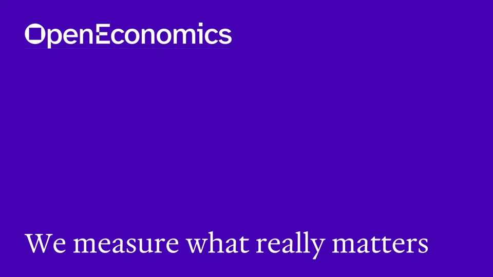
1:06Beat 09 · Closing
“We measure what really matters”
Bluette card with the OpenEconomics logo, built without AI.
The first version felt vintage: grain, period signs, silhouettes. I regenerated scenes 3 to 8 with a present-day look and made the details the story needs readable, like the cinema sign and the departments of a crew at work.
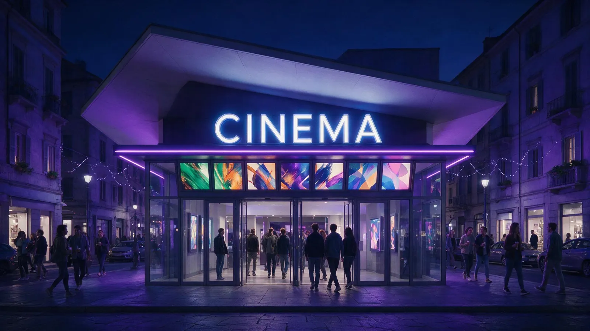
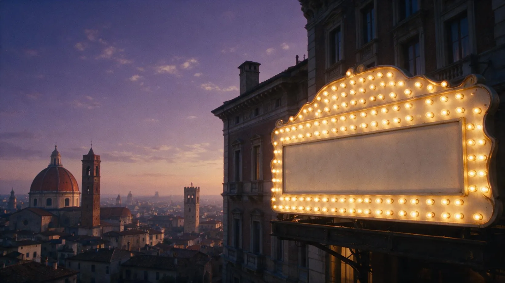
↔ BeforeAfterMicrodramas were born on social media, but the study is about cinema. So every shot is lit like a film: the set, the smartphone, the feed, the TV in a dark room. Each figure lands on a beat of the music.
AI: generates the smartphone, feed and TV footage, the music and the code that cuts graphics and footage to the beat. Me: I write the prompt for every scene, adapt the client's storyboard, design the graphics with the OpenEconomics design system and set the cuts on the music.
 0:00
0:00Opening · The set
L'audiovisivo cambia formato (Film and TV change format)
Crew and camera on a set: the 16:9 frame rotates into 9:16.
 0:03
0:03Figure 1 · Global market
From $11 to $14 billion by the end of 2026
Hands holding a smartphone: on screen, a dialogue shot like a film.
 0:06
0:06Figure 2 · Downloads
+140% app downloads
A thumb scrolls a feed made of cinema scenes.
 0:10
0:10Figure 3 · Top 30 in Italy
13 of the top 30 apps by revenue
A TV on in a dark room, the camera slowly pushes in.
 0:13
0:13Call to action
The full analysis is in APA's 8th Report
The footage fades into full purple.
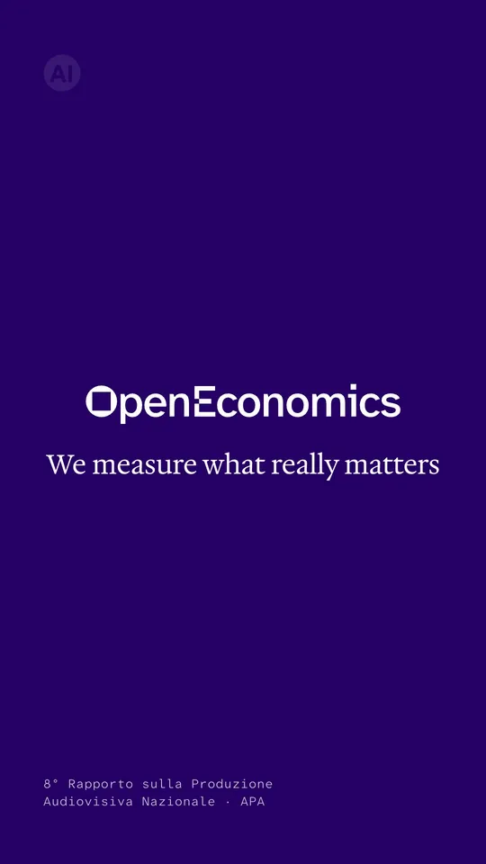
0:15Closing
We measure what really matters
The logo lands on the last hit of the music.

Drop is a communication and marketing agency for the primary sector. With AI I wrote and laid out the brand book, then translated it into a design system, and from that system I designed the website.
AI: lays out the brand book, turns the rules into tokens and components, writes the code for the library and the website. Me: I decide the system's rules (two colours, a single typeface, no icons and photography in their place), choose the images and review every page.

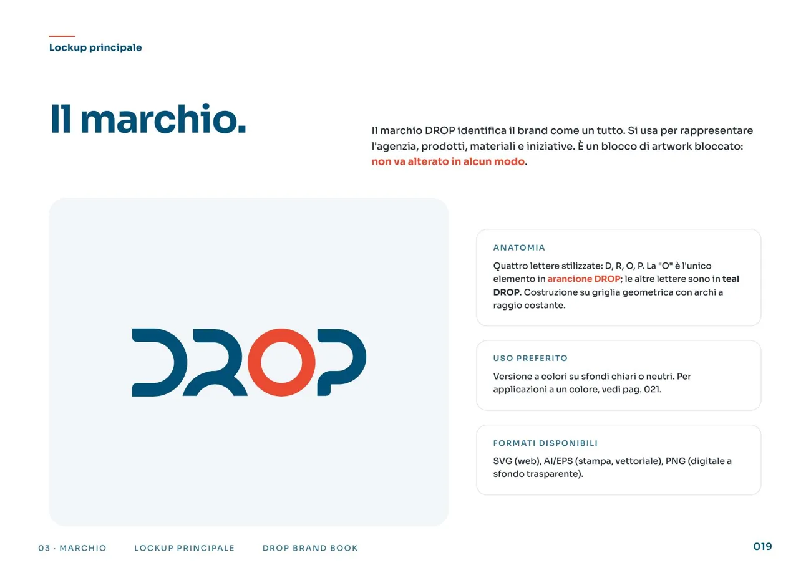


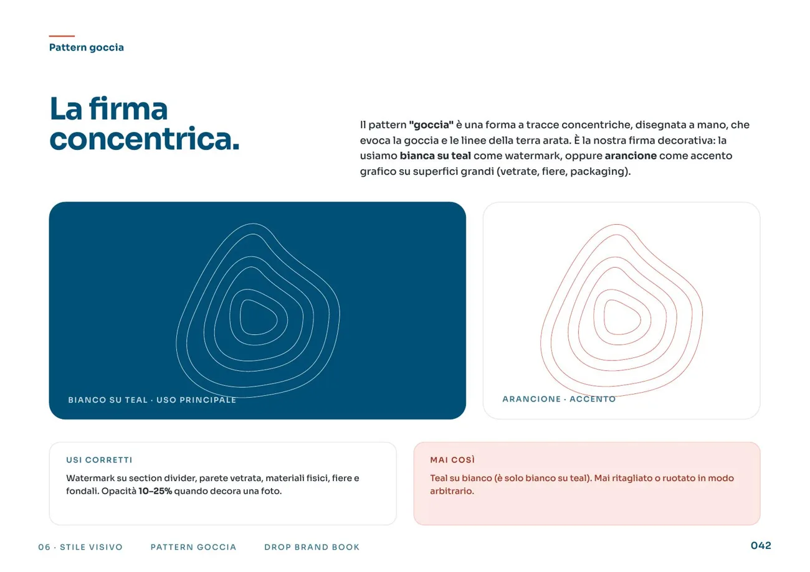
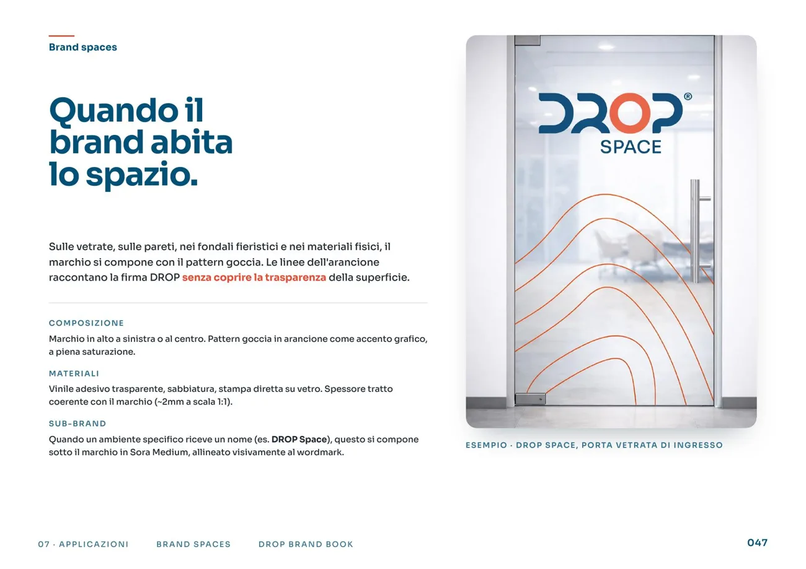
“We speak the language of the primary sector”: manifesto, services, sectors, figures and cases, designed and coded with AI starting from the design system.
Drop Teal and Drop Orange with their Pantone values, the drop pattern and the four versions of the logo, taken from the brand book and ready in the library.
The website adapts to phones with the same rules: Sora, teal and orange.
A woman on a Vespa along the coast at sunset, then the bottle. Model, locations and movement are generated with AI.
AI: generates the model in every pose, the scenes and the movement of every shot. Me: I choose the face, the outfit and the locations, decide the shots, edit the video and close on the product. The video carries the AI label.
I start from a single portrait. I generate the same woman in profile, three-quarter and from behind, then full-length in the same outfit. With these views the face stays the same throughout the video. The first beach tests immediately become short clips, to check how she moves.
I add the references: the pink outfit with bag and sandals, a vintage Vespa, vintage fashion photos and the cliffside road. Every shot first becomes an image to approve, and only then a video. The last scene is the bottle packshot.
Produttori Arborea is an agri-food cooperative from Arborea, Sardinia, with several brands for different markets. The design system translates the official brand book into colours, typefaces, icons, illustrations and components. The templates carry those rules into the product sheets, which always come out with the same layout.
AI: translates the brand book into tokens and components, vectorises the line illustrations, fills in the sheets on Canva and measures every text with the client's typefaces. Me: I read the brand book and set the rules, approve the masters, correct the sheets and write the feedback the AI rereads before every new sheet.
The brand book illustrations only existed as images. The AI redrew them as vectors, keeping the engraving's hatching: now they print at any size and take any of the system's twelve colours.

Field-dried alfalfa next to the poultry line: grid, typefaces and colours stay as approved; texts, photos and number of entries change.

Introduction, blends, ingredients and nutritional values: the product line master grows longer without changing the rules.

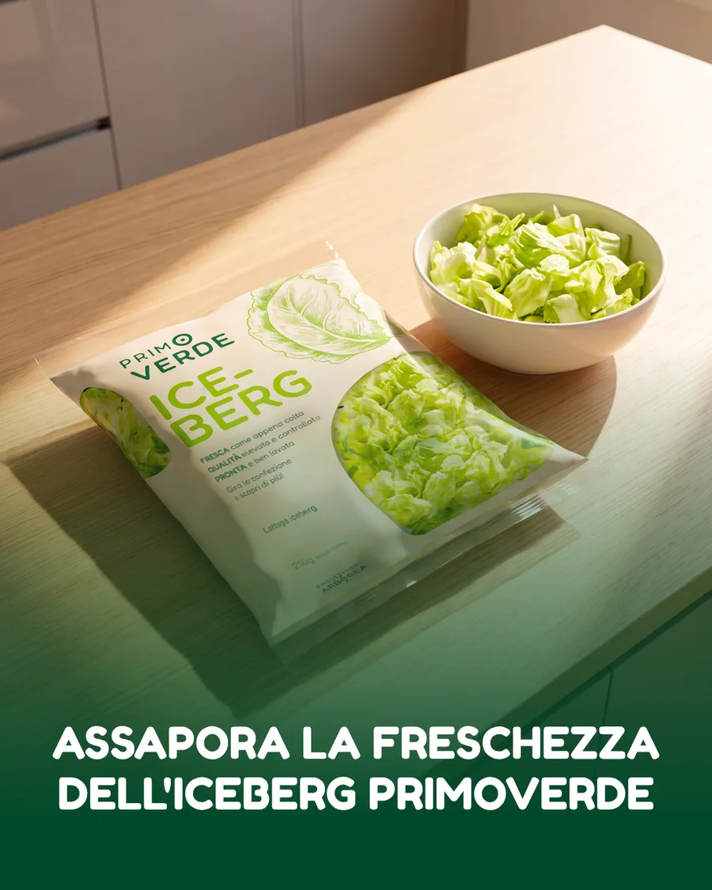
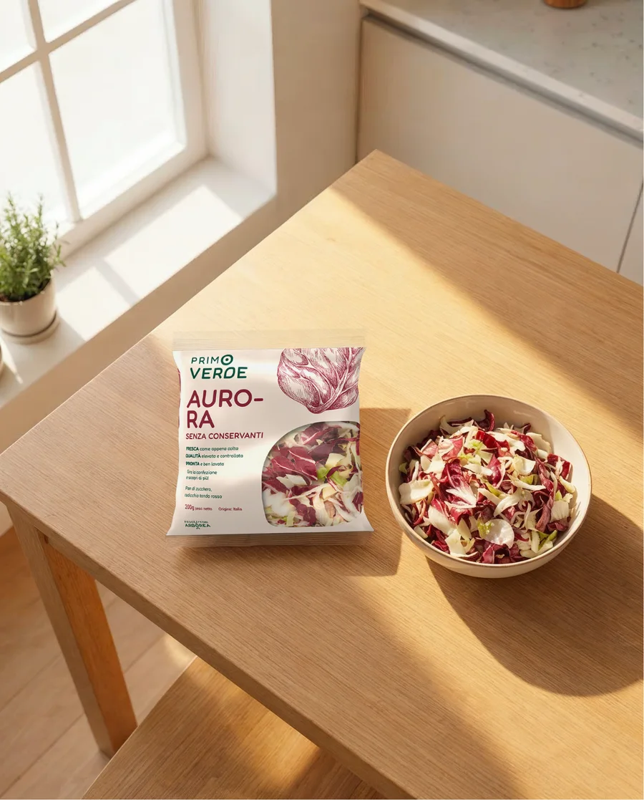


One photo per product, with no photo shoot. The packs carry the real artwork, taken from the print files: brand, copy and weight are all legible.
AI: generates the scenes and the packs with the product, then a script applies the front from the print PDF and restores the folds, light and reflections of the film. Me: I choose the scenes and the light, check that the artwork stays true to the print file and discard the versions where the AI invents details.
AI: generates the voice and the music, transcribes the voice word by word and writes the code that edits the video, so every cut, number and brand lands when the voice names it. Me: I storyboard the cooperative's script, pick the shots from the client's footage and check that every visible logo is the new one.
 0:04
0:04How it all began
1955 · Arborea
Archive photos with a slow camera move.
 0:18
0:18The cooperative today
300 members, 180 employees
The numbers appear when the voice says them.
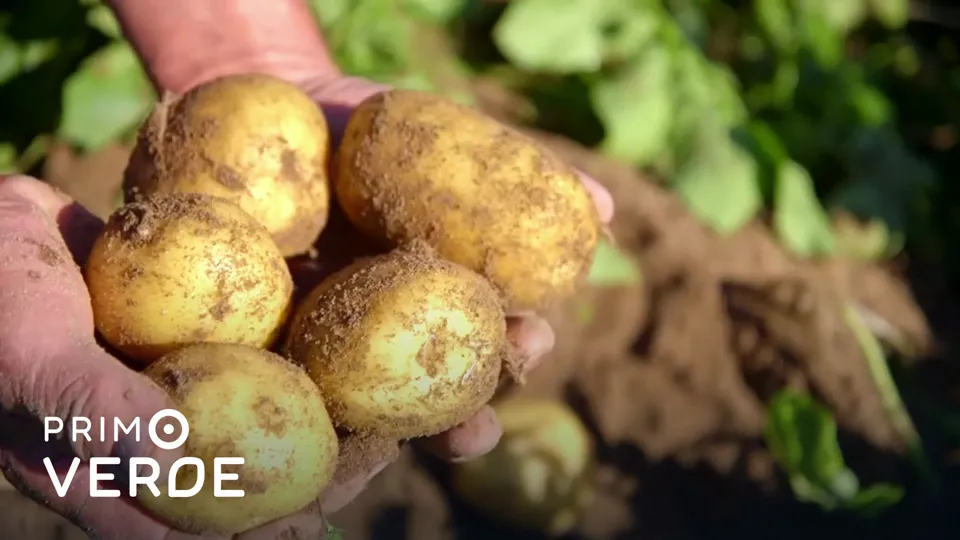
0:27Primoverde
Potatoes, carrots, watermelons
Each product lasts as long as the word that names it.
 0:42
0:42Meridoro
Animal feed
From the feed mill to the farmer's hands.
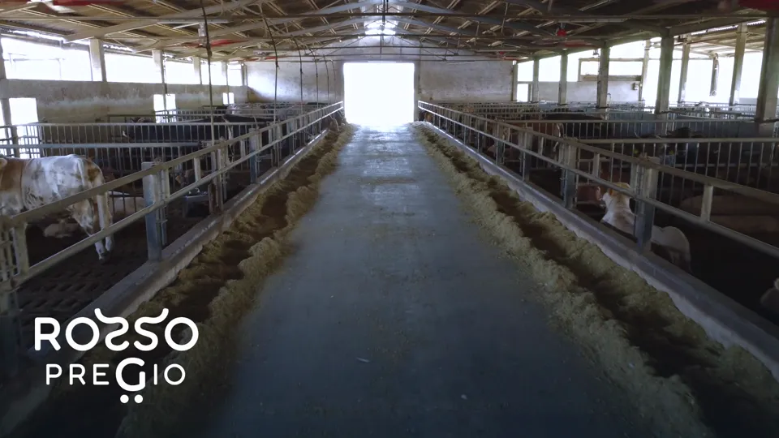
0:49Rossopregio
From farm to table
The barn, the cattle, the farms from above.
 0:58
0:58The people
Every job matters
One person per shot, each at their own work.
 1:09
1:09The ending
Mum and dad too
Today's headquarters, with the new logo on the front.
 1:13
1:13Sign-off
Produttori Arborea
The cooperative's logo and its three brands, in their colours.
The brand, the map of Sardinia lighting up town by town, then the list to find the nearest store. Only design system illustrations.
AI: generates the voice and the music, places the towns on the map using official boundaries and renders every scene from code. Me: I write the storyboard, cut the video from one minute to 23 seconds following the client's notes and use Meridoro's social media style.
An interview with the people who know the company. I work out what the work needs to say, and to whom.
The AI quickly generates different directions: compositions, images, first drafts of code.
I discard almost everything. What remains I correct until it respects the brand in every detail.
Decisions become written rules the AI rereads. The next round of repetitive material starts from there.
I'm a brand designer. For more than ten years I've worked with startups, SMEs and agencies, from Sardinia. I use AI every day as a *tool:* the hand that guides and the mind that thinks are still *mine.*
It's the service I use to turn a company's identity into a system that the team and artificial intelligence use every day. Colours, components and page templates live in the files that presentations, reports, web pages and posts are made from, so every new piece starts inside the brand.